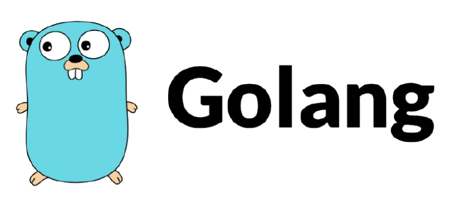
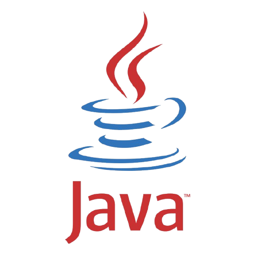
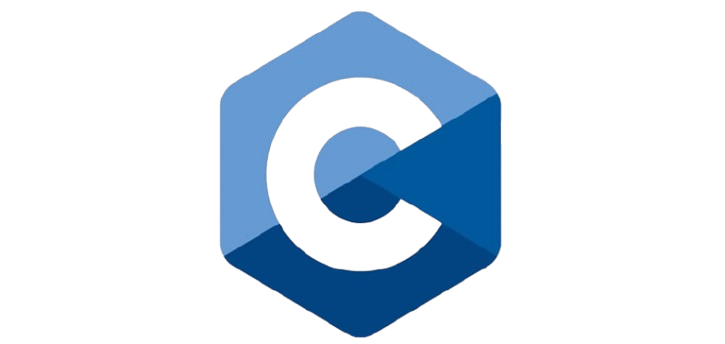
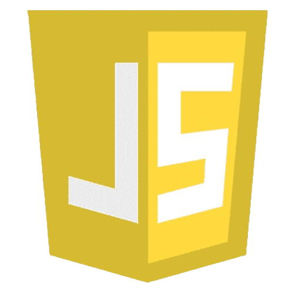
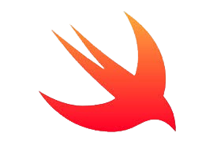
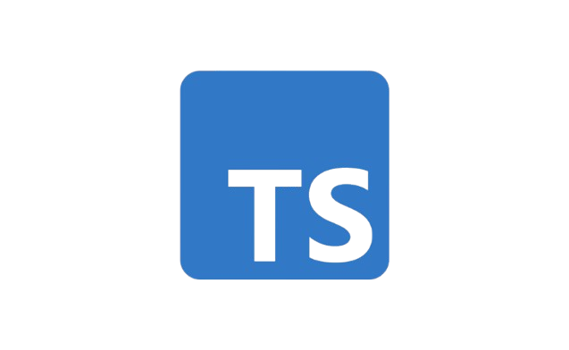

Combina la eficiencia y rendimiento de lenguajes como C con la simplicidad y
productividad de lenguajes modernos
La posición en el ranking de stack overflow es 11
Java es un lenguaje de programación ampliamente utilizado para codificar aplicaciones web
La posición en el ranking de stack overflow es 3
La intención de su creación fue extender al lenguaje de programación C y añadir mecanismos que permiten la manipulación de objetos
La posición en el ranking de stack overflow es 10
JavaScript es una de las tecnologías fundamentales de la WWW, junto con HTML y CSS.
La posición en el ranking de stack overflow es 1
Es un lenguaje de programación creado para desarrollar software en plataformas Apple: iOS, macOS, tvOS, watchOS.
La posición en el ranking de stack overflow es 16.
TypeScript es un lenguaje de programación de código abierto, creado en 2012 por Microsoft. Está diseñado para desarrollar aplicaciones en el lado del cliente y del servidor.
La posición en el ranking de stack overflow es 4.
En esta pagina se muestran algunos de los principales lenguajes de programación. Para cada lenguaje se plantea un nombre, característica fundamental y la importancia del lenguaje según una encuesta realizada en Stack Overflow. La encuesta se encuentra en el siguiente link Visitar encuesta.